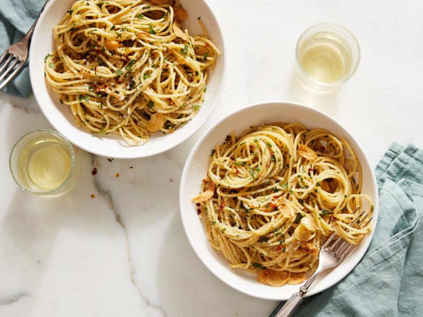

Aglio e Olio

Ingredients
- Spaghetti
- Olive oil
- Garlic
- Crushed red peppers flakes
- Optional garnishes
Steps
- Cook the spaghetti. Cook the spaghetti in a generously-salted pot of boiling water until it is just one minute shy of being al dente.
- Sauté the garlic. Meanwhile, about 3 minutes after you add the pasta to the boiling water, heat the olive oil in a large sauté pan over medium heat. Add the sliced garlic and crushed red pepper flakes and sauté for 3 to 5 minutes, or until the garlic is lightly golden.
- Toss the pasta in the sauce. Once the pasta is ready to go, use tongs to transfer the pasta immediately to the sauté pan, along with 1/2 cup of the hot starchy pasta water. Toss the pasta continuously until it is evenly coated in the garlic sauce. If the sauce looks a bit too dry, add in another 1/4 cup of the starchy pasta water.
- Taste and season. Give the pasta a quick taste add an extra pinch of salt and/or crushed red pepper flakes if needed.
- Serve. Serve immediately while it’s nice and hot, garnished with any toppings that sound good.